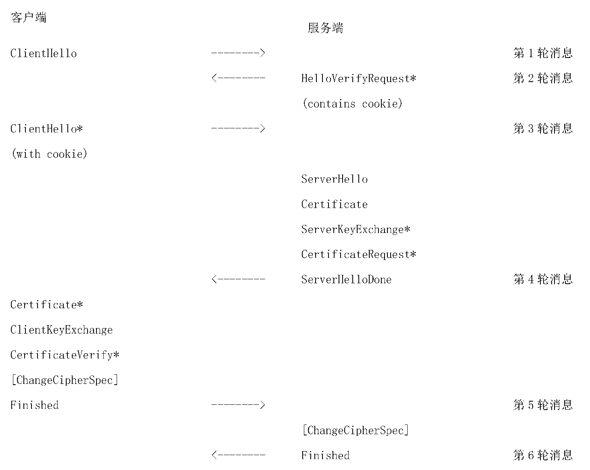
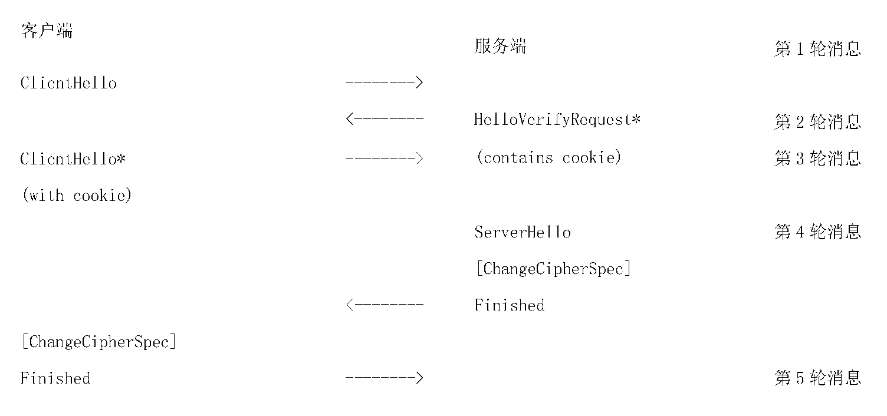
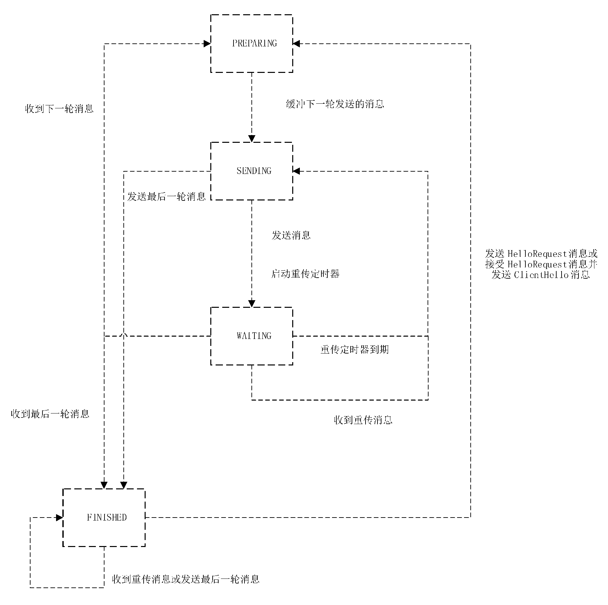

GMT0128-2023 数据报传输层密码协议规范DTLCP¶
1 范围¶
本文件规定了数据报传输层密码协议,包括记录层协议、握手协议族和密钥计算。
本文件适用于数据报传输层密码协议相关产品(如网关、终端等)的研制、检测、管理和使用。
2 规范性引用文件¶
下列文件中的内容通过文中的规范性引用而构成本文件必不可少的条款。其中,注日期的引用文件,仅该日期对应的版本适用于本文件;不注日期的引用文件,其最新版本(包括所有的修改单)适用于本文件。
GB/T 38636—2020 信息安全技术 传输层密码协议(TLCP)
GM/Z 4001 密码术语
3 术语和定义¶
GM/Z 4001 界定的以及下列术语和定义适用于本文件。
3.1 路径最大传输单元 path maximum transmission unit¶
通信的源节点和目的节点之间的路径上的任一通信链路所能支持的链路最大传输单元(MTU)的最小值。
3.2 用户数据报协议 user datagram protocol¶
无连接的传输协议,为应用程序提供一种无需建立连接就能发送封装的 IP 数据包的方法。
4 缩略语¶
下列缩略语适用于本文件。
AEAD:带关联数据的可鉴别加密(Authenticated Encryption with Associated Data)
DTLCP:数据报传输层密码协议(Datagram Transport Layer Cryptography Protocol)
MAC:消息鉴别码(Message Authentication Codes)
PMTU:路径最大传输单元(Path Maximum Transmission Unit)
UDP:用户数据报协议(User Datagram Protocol)
5 密码算法和密钥种类¶
5.1 概述¶
DTLCP 在传输层密码协议(TLCP)的基础上针对用户数据报协议的特点进行改进,采用密码技术为使用 UDP 协议的两个应用程序之间提供保密性和数据的完整性。协议用到的密码算法包含非对称密码算法、分组密码算法、密码杂凑算法、数据扩展函数和伪随机函数,协议用到的密钥种类包含服务端密钥、客户端密钥、预主密钥、主密钥和工作密钥。
5.2 密码算法¶
5.2.1 非对称密码算法¶
用于身份鉴别、数字签名、密钥交换等。
5.2.2 分组密码算法¶
用于密钥交换数据的加密保护和报文数据的加密保护。采用的工作模式应为 Galois 计数器模式 (GCM)或密文分组链接(CBC)模式。
5.2.3 密码杂凑算法¶
用于对称密钥生成和完整性校验。
5.2.4 数据扩展函数 P_hash¶
P_hash 函数的定义和使用方法应符合 GB/T 38636—2020 中5.2.4 的规定。
5.2.5 伪随机函数 PRF¶
PRF 的计算方法应符合 GB/T 38636—2020 中5.2.5 的规定。
5.3 密钥种类¶
5.3.1 概述¶
在本文件中采用非对称密码算法进行身份鉴别和密钥交换,身份鉴别通过后协商预主密钥,双方各自计算主密钥,进而推导出工作密钥。使用工作密钥进行加解密和完整性校验。
5.3.2 服务端密钥¶
服务端密钥为非对称密码算法的密钥对,包括签名密钥对和加密密钥对,其中签名密钥用于握手过程中服务端身份鉴别,加密密钥对用于预主密钥的协商。
5.3.3 客户端密钥¶
客户端密钥为非对称密码算法的密钥对,包括签名密钥对和加密密钥对,其中签名密钥用于握手过程中客户端身份鉴别,加密密钥对用于预主密钥的协商。
5.3.4 预主密钥¶
预主密钥(pre_master_secret)是双方协商生成的密钥素材,用于生成主密钥。
5.3.5 主密钥¶
主密钥(master_secret)由预主密钥、客户端随机数、服务端随机数、常量字符串,经计算生成的 48 字节密钥素材,用于生成工作密钥。
5.3.6 工作密钥¶
工作密钥包括数据加密密钥和校验密钥。其中数据加密密钥用于数据的加密和解密,校验密钥用于数据的完整性计算和校验。在本文件中,发送方使用的工作密钥称为写密钥,接收方使用的工作密钥称为读密钥。
6 协议¶
6.1 概述¶
DTLCP 包括记录层协议和握手协议族,握手协议族包含密码规格变更协议、报警协议及握手协议。
6.2 数据类型定义¶
数据类型定义应符合 GB/T 38636—2020 中6.2 的规定。
6.3 记录层协议¶
6.3.1 通则¶
记录层协议是分层次的,每一层都包括长度字段、描述字段和内容字段。记录层协议接收将要被传输的消息,将数据分块、压缩(可选)、计算采用带密钥杂凑的消息鉴别码(HMAC)、加密,然后传输。接收到的数据经过解密、验证、解压缩(可选)、重新封装然后传送给高层应用。
通过记录层协议消息进行传输的协议类型包括握手协议族和应用数据等。为了支持协议的扩展,记录层协议宜支持其他的记录类型。任何新的记录类型都应在针对上述类型分配的内容类型值之外去分配。如果接收到一个不能识别的记录类型应忽略。
6.3.2 连接状态¶
连接状态是记录层协议的操作环境。与传输层密码协议(TLCP)相同,DTLCP 也包括四种典型的连接状态:当前读状态、写状态、未决的读状态、未决的写状态。每种状态的定义,以及连接状态的安全参数结构、定义和使用方法,应符合 GB/T 38636—2020 中6.3.2 的规定。
6.3.3 记录层¶
6.3.3.1 概述¶
记录层接收从高层来的任意大小的非空连续数据,将数据分段、压缩、计算校验码、加密,然后传输。 接收到的数据经过解密、验证、解压缩、重新封装然后传送给高层应用。
6.3.3.2 分段¶
为避免 IP 分片,记录层将数据分成不超过 PMTU 的消息记录。每个 DTLCP 消息记录应在单个 UDP 报文内,多个 DTLCP 消息记录可放在同一个 UDP 报文中。UDP 报文载荷的第一个字节应为 DTLCP 消息记录的开始,DTLCP 消息记录不能跨 UDP 报文传输。位于同一个 UDP 报文的多个 DTLCP 消息记录可连续放置,并根据 DTLCP 消息记录的数据结构决定每个记录的边界。
按照 GB/T 38636—2020 中6.3.3.2 规定的记录层协议报文,数据报传输层密码协议在记录层协议报文中增加了显式的序列号字段,使得接收端能正确的验证 MAC 值。
每个消息记录结构如下:
struct {
ContentType type;
ProtocolVersion version;
uint16 epoch;
uint48 sequence_number;
uint16 length;
opaque fragment[DTLSPlaintext.length];
} DTLSPlaintext;
其中:
a) Type:
记录层协议类型。定义为:
b) Version:
所用协议的版本号。本文件的版本号为1.1。定义为:
c) epoch
一个计数值,数据报传输层密码协议新增字段,每次密码规格变更都应增加该值。
d) sequence_number
本记录的序列号,数据报传输层密码协议新增字段。
e) length
以字节为单位的记录长度,小于或等于 PMTU。
f) fragment
将传输的数据。记录层协议不关心具体数据内容。
DTLCP 使用显式序列号,位于记录中的 sequence_number 域。 对于每个 epoch,sequence_number 序列号都单独维护,每个 epoch 对应的 sequence_number 都初始化为 0 且在每次发送一个 DTLCP 记录层数据报文时单调递增。每个 epoch 初始化为 0 且在每次发送一个密码规格变更 (ChangeCipherSpec)时单调递增。
当同时有几个握手并行时,有可能出现不同握手的记录序列号重复的情况,epoch 用于区分这种情况。为确保 epoch/sequence_number 对的唯一性,在相当于2 倍 TCP 的 MSL(最大分段生存期)时间内 epoch 的值不能重用。
基于 UDP 的 DTLCP 协议报文存在乱序可能性,属于前一个 epoch 的记录也可能出现在后一个 epoch 开始之后。一般情况下属于早期 epoch 的记录应予丢弃,但密钥素材等信息可被保留相当于 TCP 的最大分段生存期(MSL)时间以进行报文重排序。在本次握手结束之前,属于前一个 epoch 的报文应被接收。
序列号(sequence_number)或 epoch 回绕之前应终止旧的连接,重新握手建立一个新的连接。
6.3.3.3 压缩和解压缩¶
所有的记录都应使用当前会话状态指定的压缩算法进行压缩。当前会话状态指定的压缩算法被初始化为空算法。默认压缩算法为空算法。
压缩算法将一个 DTLSPlaintext 结构的数据转换成一个 DTLSCompressed 结构的数据。
压缩后的数据长度最多只能增加1024 个字节。如果解压缩后的数据长度超过了\(2^{14}\) 个字节,则报告一个 decompression failure 致命错误。
与 TLCP 相比,DTLCP 压缩后数据结构增加了 epoch 和 sequence_number 字段:
struct {
ContentType type;
ProtocolVersion version;
uint16 epoch;
uint48 sequence_number;
uint16 length;
opaque fragment[DTLSCompressed.length];
} DTLSCompressed;
其中:
a) type、version、epoch、sequence_number 的定义同6.3.3.2。
b) length
以字节为单位的 DTLSCompressed.fragment 长度,小于或等于\(2^{14}+1024\)。
c) fragment
DTLSPlaintext.fragment 的压缩形式。
6.3.3.4 加密和校验¶
6.3.3.4.1 概述¶
加密运算和校验运算把一个 DTLSCompressed 结构的数据转化为一个 DTLSCiphertext 结构的数据。解密运算则是执行相反的操作。
加密后数据结构如下:
struct {
ContentType type;
ProtocolVersion version;
uint16 epoch;
uint48 sequence_number;
uint16 length;
select (CipherSpec.cipher_type) {
case block: GenericBlockCipher;
case aead: GenericAEADCipher;
} fragment;
} DTLSCiphertext;
其中:
a) type、version、epoch、sequence_number 的定义同6.3.3.2。
b) length
以字节为单位的 DTLSCiphertext.fragment 长度,小于或等于\(2^{14}+2048\)。
c) fragment
带有校验码的 DTLSCompressed.fragment 加密形式。
6.3.3.4.2 校验算法的数据处理¶
校验码的计算是在加密之前进行,运算方法如下:
其中:
a) HMAC_hash
计算校验码时使用的密码杂凑算法。
b) write_MAC_secret
客户端为 client_write_MAC_secret,服务端为 server_write_MAC_secret,其计算方法应符合 GB/T 38636—2020 中6.5.2 的规定。
DTLCP 的序列号是显式传送,MAC 计算值与前后的记录层数据报文没有关联关系。对于 MAC 错误,DTLCP 的实现可中断连接,也可简单地丢弃 MAC 错误记录然后继续维持连接。如果在收到一个 MAC 无效的消息时选择生成一个警报,应生成一个 fatal 级别的 bad_record_mac alert 并且中止它的连接。
6.3.3.4.3 分组密码算法的数据处理¶
使用分组密码算法加解密数据的处理过程及参数应符合 GB/T 38636—2020 中6.3.3.4.3 的规定。
6.3.3.4.4 AEAD 算法的数据处理¶
使用 AEAD 算法加解密的处理过程及参数应符合 GB/T 38636—2020 中6.3.3.4.4 的规定,附加鉴别数据(additional_data)定义中的64 位序列号由 \(\mathrm{epoch}+\mathrm{sequence\_number}\) 构成:
6.3.3.5 抗重放¶
DTLCP 记录包含一个序列号 sequence_number 以提供重放保护。序列号的校验应遵循下面的滑动窗口流程:
会话的接收报文的计数应在会话建立时被初始化为0。对于每个已接收到的记录,接收者应验证记录中包含的序列号没有与在这个会话的生命周期内接收到的任何其他记录的序列号重复。这是在与会话匹配后应用于数据包的第一个检查,以加快对重复记录的拒绝。
丢弃重复数据通过一个滑动接收窗口来实现。应支持最小为32 的窗口大小,推荐大小是64 的窗口 (设置为默认值)。其他的窗口大小(大于最小值)可由接收者选择(接收者不能告知发送者窗口的大小)。
窗口的右边缘代表着当前会话接收到的最高有效序列号的值。序列号比窗口左边缘低的记录应被丢弃。落入窗口范围内的记录应依据在窗口中接收到的记录的列表进行检查,执行这种检查的一个有效的方法是使用位掩码。
如果接收到的记录落入窗口中且是新的,或者记录处于窗口的右边缘,接收者进行 MAC 验证。如果 MAC 验证失败,接收者应丢弃接收到的非法记录。仅当 MAC 验证成功时接收窗口才能更新。
6.4 握手协议族¶
6.4.1 通则¶
握手协议族应符合 GB/T 38636—2020 中6.4 的规定,由密码规格变更协议、握手协议和报警协议三个子协议组成,用于双方协商出供记录层使用的安全参数,进行身份验证以及向对方报告错误等。
6.4.2 密码规格变更协议¶
应符合 GB/T 38636—2020 中6.4.2 的规定。
6.4.3 报警协议¶
应符合 GB/T 38636—2020 中6.4.3 的规定。
6.4.4 握手协议总览¶
握手协议应符合 GB/T 38636—2020 中6.4.4 的规定,涉及以下过程:
a) 交换 hello 消息来协商密码套件,交换随机数,决定是否会话重用;
b) 交换必要的参数,协商预主密钥;
c) 交换证书或基于标识的密码(IBC)信息,用于验证对方;
d) 使用预主密钥和交换的随机数生成主密钥;
e) 向记录层提供安全参数;
f) 验证双方计算的安全参数的一致性、握手过程的真实性和完整性。
基于 UDP 数据报的安全协议易遭受各种 DoS(拒绝服务)攻击,为了应对 DoS 攻击,DTLCP 使用无状态 cookie 技术。当客户端发送它的 ClientHello 消息给服务端时,服务端用 HelloVerifyRequest 消息来响应。这个消息包含了一个随机生成的无状态 cookie。客户端应重传添加这个 cookie 的 ClientHello 消息。然后服务端验证 cookie,仅当 cookie 有效时才能继续进行握手处理。这个机制强迫攻击者/客户端能够接收 cookie,使得使用虚假 IP 地址的 DoS 攻击难以进行。握手消息中无状态 cookie 是可选的。服务端接收到携带无效 cookie 的 ClientHello 消息时,作为无 cookie 的 ClientHello 消息处理。当使用无状态 cookie 和 HelloVerifyRequest 消息时,后续的 CertificateVerify 消息的哈希运算和 Finished 消息的校验数据计算中不包含 HelloVerifyRequest 消息和最初的 ClientHello 消息。
握手消息流程如图1 所示,属于同一轮的消息既可放在同一个 UDP 报文中也可分开在不同的 UDP 报文中发送:

[!note]
注: *表示可选或依赖于上下文关系的消息,不是每次都发送。
[]不属于握手协议消息。
图 1 握手消息流程
不使用无状态 cookie 和 HelloVerifyRequest 消息的会话重用过程应符合 GB/T 38636—2020 中 6.4.4 的规定,使用无状态 cookie 和 HelloVerifyRequest 消息的会话重用过程如图2 所示。

图 2 重用的握手消息流程
6.4.5 握手协议¶
6.4.5.1 结构定义¶
握手协议是在记录层协议之上的协议,用于协商安全参数。握手协议的消息通过记录层协议传输。
握手消息结构定义如下:
struct {
HandshakeType msg_type;
uint24 length;
uint16 message_seq;
uint24 fragment_offset;
uint24 fragment_length;
select (msg_type) {
case hello_request: HelloRequest;
case client_hello: ClientHello;
case server_hello: ServerHello;
case hello_verify_request: HelloVerifyRequest;
case certificate: Certificate;
case server_key_exchange: ServerKeyExchange;
case certificate_request: CertificateRequest;
case server_hello_done: ServerHelloDone;
case certificate_verify: CertificateVerify;
case client_key_exchange: ClientKeyExchange;
case finished: Finished;
} body;
} Handshake;
握手消息类型定义如下:
enum {
hello_request(0),
client_hello(1), server_hello(2),
hello_verify_request(3),
certificate(11), server_key_exchange(12),
certificate_request(13), server_hello_done(14),
certificate_verify(15), client_key_exchange(16),
finished(20), (255)
} HandshakeType;
握手协议消息应按照规定的流程顺序进行发送。不需要的握手消息可被接收方忽略。
按照 GB/T 38636—2020 中6.4.5.1 规定的握手消息结构,数据报传输层密码协议 DTLCP 的握手消息增加了 message_seq、fragment_offset 和 fragment_length 三个字段和 hello_verify_request 这个消息类型。
在每次握手时传输的第一个消息的 message_seq 始终为0。新消息生成时,message_seq 的值应加 1。在重握手的情况下,HelloRequest 的 message_seq 为0,ServerHello 的 message_seq 为1。当一个消息被重传时,使用相同的 message_seq。
握手的两端都应维持一个 next_receive_seq 计数器,握手初始化时该计数器置零,当接收到的握手消息的 message_seq 与 next_receive_seq 计数器相同时,next_receive_seq 计数器加1 并处理握手消息。message_seq 小于 next_receive_seq 计数器的消息应被丢弃,message_seq 大于 next_receive_seq 计数器的消息应被排队缓存(当空间不足时可丢弃)。
6.4.5.2 消息分片与重组¶
每个 DTLCP 消息应在单个 UDP 报文内。对于超出最大记录大小的握手消息,DTLCP 提供消息分片与重组机制,将一个握手消息分片为多个记录,每个记录可被分别传送,从而避免了 IP 分片。
当传输握手消息时,发送者将消息分为 \(N\) 个连续的数据序列。这些序列不能大于最大握手分片大小且应共同包含整个握手消息。这些序列不应重叠。发送者应为这 \(N\) 个连续的数据序列产生 \(N\) 个握手消息,这些消息具有与原始的握手消息相同的 message_seq。每个新消息都由 fragment_offset(前一个分片包含的字节数)和 fragment_length(这个分片的长度)来标识。所有消息的 length 域都应与原始的消息相同。对于未分片的消息:\(\mathrm{fragment\_offst}=0\) 且 \(\mathrm{fragment\_length}=\mathrm{length}\)。
在 CertificateVerify 消息的哈希运算和 Finished 消息的校验数据计算中,分片的消息应作为一个整体进行分片重组后参与运算。
当收到一个分片的握手消息时,应缓存该分片直到收到整个握手消息。应能处理重叠的分片序列,使发送者在 PMTU 值发生变化时能使用更小的分片大小重传握手消息。
6.4.5.3 消息超时和重传¶
DTLCP 的握手消息可分成多个消息组,每个消息组中的多个不同消息作为一个整体在不同轮次中一起依次进行发送,如图1 所示。每轮的消息发送可包含多个消息,但在超时重传的时候作为一个单一整体处理,即全部重传。DTLCP 使用基于状态机的一个简单的超时和重传机制。DTLCP 状态机有四个基本状态:PREPARING 状态,WAITING 状态,SENDING 状态,FINISHED 状态。状态转换如图3 所示。
在 PREPARING 状态,进行待发送消息的相关计算和构造消息,并将消息缓存起来用于传输,完成后进入 SENDING 状态。
在 SENDING 状态,传输缓存的消息。消息传输完成后,如果是握手的最后一个消息就进入 FINISHED 状态。如果需要收到更多消息,设置一个重传定时器然后进入 WAITING 状态。
有三种方式退出 WAITING 状态。
a) 重传定时器超时: 转换到 SENDING 状态,整轮重传已发送的消息,重置重传定时器,然后回到 WAITING 状态。
b) 从对端接受到重传消息: 转换到 SENDING 状态,整轮重传已发送的消息,重置重传定时器,然后回到 WAITING 状态。(收到重传消息可能是对端重传定时器到期的结果,表示先前本端发送的一轮消息可能有部分丢失)
c) 接收到下一轮消息: 如果是最后一个消息,转换到 FINISHED。如果需要发送一个新的消息,转换到 PREPARING 状态。部分接收(接收到消息的一部分或一轮消息中的部分消息)不应导致状态转换或定时器重置。
DTLCP 客户端发送第一个消息(ClientHello),开始于 PREPARING 状态。DTLCP 服务端开始于 WAITING 状态,缓存为空且没有重传定时器。
当服务端需要重新握手时,服务端应从 FINISHED 状态转换到 PREPARING 状态,传送 HelloRequest。当客户端收到一个 HelloRequest 时,客户端应从 FINISHED 状态转换到 PREPARING 状态,传送 ClientHello。
在 FINISHED 状态达到至少两个默认的 TCP MSL 时间时,传输最后一个报文的节点(处于普通握手过程中的服务端或处于握手恢复过程中的客户端)应重传最后一个报文来响应对端最后一个报文的重传,以避免当最后一个报文丢失时产生死锁。在客户端等待 Finished 消息时,客户端的重传定时器应启动并超时重传客户端的 Finished 消息,服务端应用服务端的 Finished 消息来响应,完成握手。 同样的逻辑也适用于恢复握手过程中的服务端。
由于可能存在的丢包,握手的一端可能在另一端还没有收到 Finished 消息的时候就开始发送应用数据。DTLCP 的实现应丢弃或者缓存所有用于新 epoch 的应用数据报文直到收到当前 epoch 的 Finished 消息。如果收到当前 epoch 的 Finished 消息之前,收到新 epoch 的应用数据报文,意味着出现了乱序或丢包,应立即重传当前 epoch 的最后一个报文。
对重传定时器的错误处理会导致严重的阻塞问题。重传定时器的初始值宜设为1 s,每次重传时加倍,直到64 s。DTLCP 仅握手消息使用消息重传机制,不会导致严重的拥塞问题。重传定时器的值在完成一次无丢包的传输后或者在不少于10 倍当前值的空闲时间之后应重置到初始值。
Alert 报警消息不进行重传,但在收到重传的错误消息后应触发一个新的报警消息。

图 3 DTLCP 超时重传状态图
6.4.5.4 Hello 消息¶
6.4.5.4.1 Client Hello 消息¶
该消息为客户端 hello 消息。
客户端 hello 消息作为握手协议的第一条消息。
客户端在发送客户端 hello 消息之后,等待服务端回应服务端 hello 消息。
客户端 hello 消息结构定义如下:
struct {
ProtocolVersion client_version;
Random random;
SessionID session_id;
opaque cookie<0..2^8-1>;
CipherSuite cipher_suites<2..2^16-1>;
CompressionMethod compression_methods<1..2^8-1>;
} ClientHello;
其中,cookie 字段为 DTLCP 新增,其余字段应符合 GB/T 38636—2020 中6.4.5.2.1 的规定。
发送第一个 ClientHello 消息时,cookie 域应留空 (0 长度)。当响应一个 HelloVerifyRequest 时,客户端应使用与原始的 ClientHello 相同的参数值(版本、随机数、会话 ID、密码套件、压缩算法)。 服务端应使用这些值来生成 cookie,并使用收到的 cookie 来验证这些值是否正确。当收到第二个 ClientHello 时,服务端验证 Cookie 是否合法。
DTLCP 支持的密码套件列表应符合 GB/T 38636—2020 中6.4.5.2.1 的规定。
6.4.5.4.2 HelloVerifyRequest 消息¶
服务端 HelloVerifyRequest 消息结构定义如下:
其中:
a) server_version
该字段表示服务端支持的协议版本。本文件的版本号是1.1。
b) cookie
服务端产生的 cookie。服务端应使用与原始的 ClientHello 相同的参数值(版本、随机数、会话 ID、 密码套件、压缩算法)来生成 cookie 并使用收到的 cookie 来验证这些值是否正确。DTLCP 服务端的 cookie 生成方式应为无状态,能在服务端不保存任何 client 状态的情况下验证 cookie。为了避免序列号在多个 HelloVerifyRequest 中重复,服务端应将 ClientHello 中的记录序列号用作 HelloVerifyRequest 中的记录序列号。应用如下的方式产生 cookie:
其中:
a) HMAC_hash
计算 cookie 时使用的密码杂凑算法,由6.4.5.4.1 中的密码套件确定。
b) secret
服务端随机产生的秘密值,不针对特定的 client,应定期更新。
c) clientIP
服务端所见客户端 IP 地址,即服务端收到的客户端数据报文的源 IP 地址。
6.4.5.4.3 Server Hello 消息¶
该消息为服务端 hello 消息。如果发送了 HelloVerifyRequest 消息,服务端应在第二个 ClientHello 消息 cookie 验证通过后才能使用与 HelloVerifyRequest 中使用的相同的版本号来发送一个 ServerHello,记录序列号从初始化开始正常递增。在收到 ServerHello 时,客户端应验证服务端版本号是否匹配。如果服务端收到了一个带有无效 cookie 的 ClientHello 消息,应将其当做无 cookie 的 ClientHello 消息处理,即触发新的 HelloVerifyRequest 消息。
消息结构及其他处理过程应符合 GB/T 38636—2020 中6.4.5.2.2 的规定。
6.4.5.4.4 Hello Request 消息¶
该消息通知客户端开始一轮新的握手。消息结构定义如下:
6.4.5.5 Server Certificate 消息¶
该消息为服务端证书消息,消息结构及处理过程应符合 GB/T 38636—2020 中6.4.5.3 的规定。
6.4.5.6 Server Key Exchange 消息¶
本消息为服务端密钥交换消息,消息结构及处理过程应符合 GB/T 38636—2020 中 6.4.5.4 的规定。
6.4.5.7 Certificate Request 消息¶
本消息为证书请求消息,消息结构及处理过程应符合 GB/T 38636—2020 中6.4.5.5 的规定。
6.4.5.8 Server Hello Done 消息¶
表示握手过程的 hello 消息阶段完成。发送完该消息后服务端应等待客户端的响应消息。消息结构及处理过程应符合 GB/T 38636—2020 中6.4.5.6 的规定。
6.4.5.9 Client Certificate 消息¶
本消息为客户端证书消息。如果服务端请求客户端证书,客户端应发送本消息。消息结构及处理过程应符合 GB/T 38636—2020 中6.4.5.7 的规定。
6.4.5.10 Client Key Exchange 消息¶
本消息为客户端密钥交换消息,消息结构及处理过程应符合 GB/T 38636—2020 中 6.4.5.8 的规定。
6.4.5.11 Certificate Verify 消息¶
本消息为证书校验消息,消息结构及处理过程应符合 GB/T 38636—2020 中6.4.5.9 的规定。初始的 ClientHello 和 HelloVerifyRequest 消息不应被包含在本消息的数字签名的计算中。
6.4.5.12 Finished 消息¶
本消息为握手结束消息,消息结构及处理过程应符合 GB/T 38636—2020 中6.4.5.10 的规定。初始的 ClientHello 和 HelloVerifyRequest 消息不应被包含在本消息的校验数据的计算中。
6.5 密钥计算¶
6.5.1 主密钥计算¶
主密钥结构和计算方法应符合 GB/T 38636—2020 中6.5.1 的规定。
6.5.2 工作密钥¶
工作密钥结构和计算方法应符合 GB/T 38636—2020 中6.5.2 的规定。
参考文献¶
[1] RFC 6347 Datagram Transport Layer Security Version 1.2